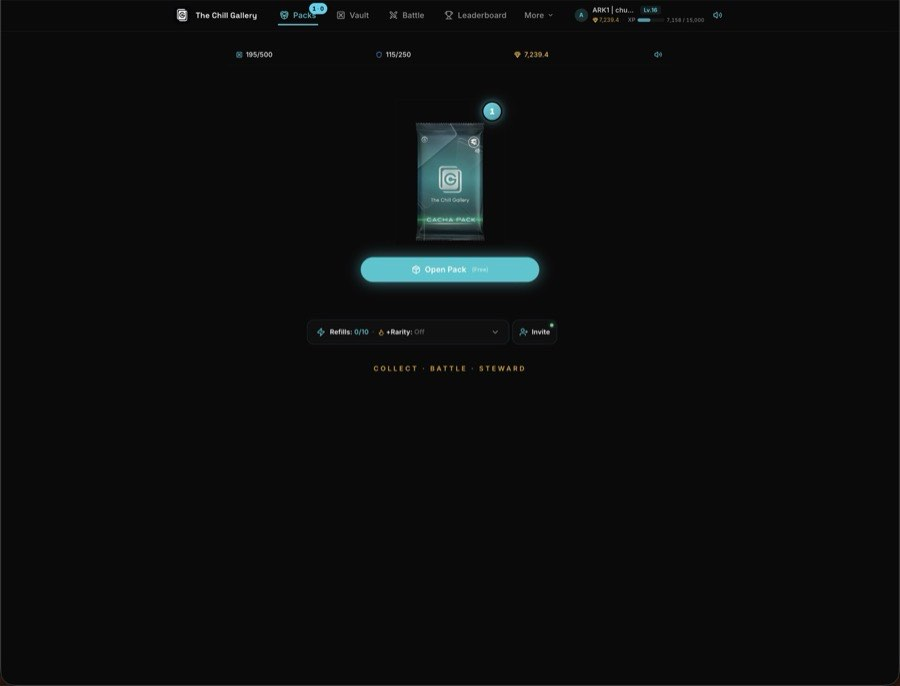

The first thing a player sees at gacha.thechillgallery.com. It is the screen the whole product turns on — if opening a pack does not feel like an event here, nothing later can rescue it. This is what it was, and what it became.
Beforethe shipped build

One pack, one button, one collapsed row of numbers — and beneath it, most of a screen holding nothing at all.
Afterlive now
The refills became a ring you can see and touch. The empty half became the panel that governs it. Six seconds of the screen at rest — nothing is being clicked.
A number in a collapsed strip — Refills: 0/10 — that you
read rather than used.
A count is something you check. Ten bolts around the pack are something you spend. Tapping one returns a pack, so the resource and the action are the same object — there is nothing to go and find.
Content stopped just under halfway down. The rest was black.
A hero screen that ends in nothing reads as unfinished, and it trains the player not to look down. Energy, boosts and both spend actions now live in that space — the screen ends where the screen ends.
A single Open Pack (Free).
Use Refills (1) and Use all Refills (10) are for two different people — the one savouring a pull and the one clearing a stack before work. One button forced both to behave like the other.
Small, flat, adrift in the middle of the frame.
It is the product. Rim light, depth and roughly twice the area make it the largest thing on the screen, which is the only honest hierarchy for a screen named after it.
This page is a proposal for the Game UI section. It would take the place of the twelve-screen grid currently there, with the remaining screens kept below it.
Visit the live site ↗There is no “before” for this one — the product had no onboarding at all. It opened on a sign-in box. These six screens and the sign-in behind them were built from nothing, and they are the argument the product makes for itself before it asks for an email. Six screens, then the sign-in they all lead to.
The flowOne screen per row, alternating sides. The boxes are landscape and waiting on the recordings.
Open gacha packs to pull from 100 real-world icons — athletes, artists, investors, founders. Five rarities, a unique serial on every card.
Deploy your top five into turn-based battles. ATK, DEF and HP decide it. Win bits, climb the leaderboard, protect your rank.
Combine duplicates to upgrade their rarity. Sacrifice commons to craft rares, rares to craft ultra rares. Every forge makes the deck stronger.
List what you do not need, buy what you want. Bits-based P2P trading with a 5% fee. Spot deals, snipe UR+ drops.
Immortalise a card to own it forever and claim Stewardship over the iconic name. On-chain, verifiable, forever yours.
The tour ends where the product begins — one pack, guaranteed one of each rarity, before an account is ever asked for.
The tailWide sign-in banner, and the slot held for the pack model.
Half a million triangles, as exported.
Drag to turn